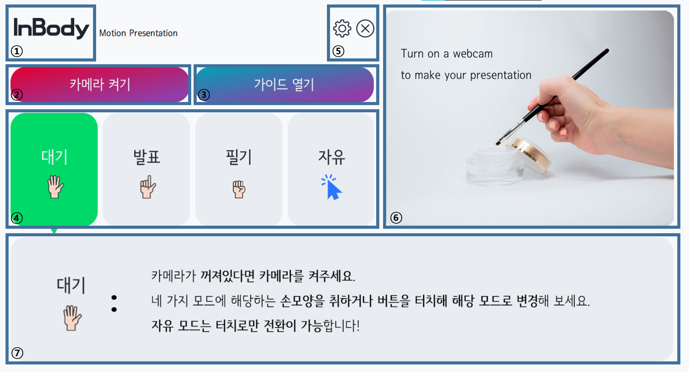

터치패널에 있는 화면은 다음과 같이 구성되어 있습니다.

① InBody 로고를 누르면 인바디 홈페이지를 열 수 있습니다.
② 프로그램의 "모드"를 변경할 수 있습니다. "모드"에 대한 자세한 설명은 여기를 참조해주세요.
③ 카메라 켜기 / 끄기 버튼입니다. 발표를 시작하거나 끌 때 누르세요. 카메라가 켜고 꺼지는 데에 5초 정도의 시간이 소요됩니다.
④ 본 가이드를 여는 링크입니다. 언제든지 궁금한 점이 있다면 눌러주세요.
⑤ 설정 버튼과 나가기 버튼입니다. 톱니 모양 링크를 눌러 설정 메뉴로, 나가기 모양 링크를 눌러 프로그램을 완전히 종료할 수 있습니다.
⑥ 카메라 입력과 제스처 인식 상황을 모니터링하기 위한 화면입니다. 카메라가 꺼져있는 상황에서는 대기 그림이 출력됩니다. 우측 하단의 화면 캡쳐를 클릭해 프로그램을 사용하는 기념 사진을 남길 수 있습니다.
⑦ 대본이 보여지는 부분입니다. Microsoft Powerpoint를 이용하여 발표를 진행할 때 하단에 위치하는 스크립트 크기를 이 부분에 맞춰주세요.